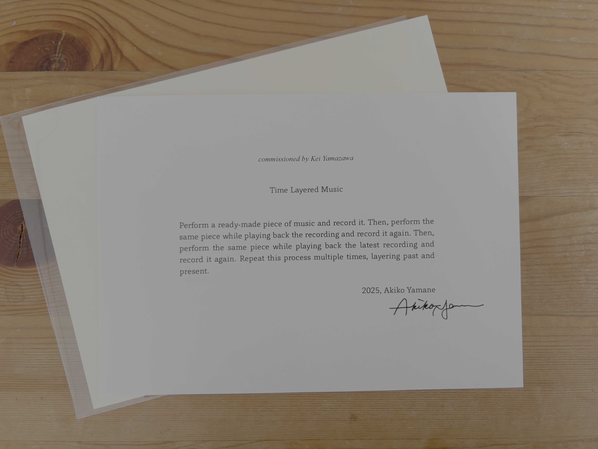

電化製品 (2026)
Record the sustained sound of an everyday appliance. Play back the recording.
Listen closely, and sound together with it.
電化製品の持続音を録音する。録音した音を再生する。
よく傾聴しながら、一緒に音を出す。
既に在る「作品」を演奏して録音し、それを再生しながら同時に再び演奏を重ねて録音していくというプロセスを、任意の回数行うことが指示されている。
どの楽曲を奏でるかによって毎回音の表層は大きく変わるが、核となるのは表層よりも重なっているという状態そのものである。今、ここで弾いていた音楽が実在していた、ということに対して、それを更に上から重ねていくと、同じ楽曲を弾いていても演奏のたびに全く同じには重ならず、その一回性毎の重なりからできる音の綾、模様が生まれてくる。そういった、時間を超えた時間と時間の対話を「演奏する」という行為を通じて作り出していく。その時しか生まれなかったその綾の手触りを、音符の原理ではなくて聴き方、から生まれる綾として、共有・体験する時空間を作ろうとした。
山根明季子

Printed Text Score
commissioned by Takashi Matsudaira and Akane Kudo / 松平敬＆工藤あかね委嘱作品
premiered by Kei Yamazawa (vc) and Sumihisa Arima (el), August 13 2026